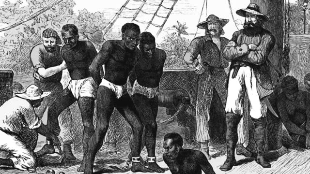
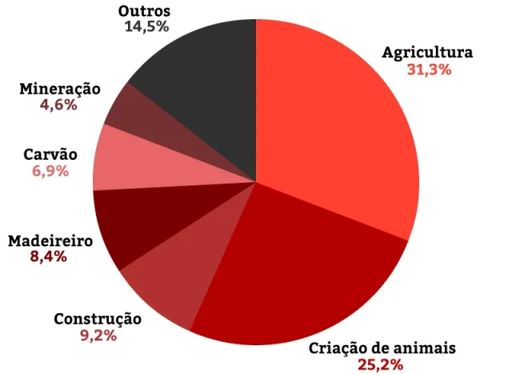
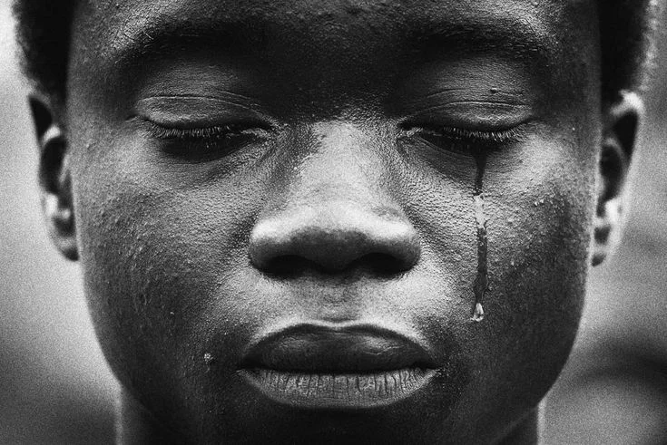

O trabalho escravo contemporâneo envolve condições degradantes que privam a pessoa de sua dignidade e liberdade. Caracteriza-se pela imposição de jornadas exaustivas, retenção de documentos, servidão por dívidas e condições insalubres de trabalho. Não se limita ao uso de força física, mas inclui coerção psicológica e restrição de direitos básicos. Apesar de ser ilegal em diversos países, ocorre em setores como agricultura, construção civil e confecção. A exploração geralmente afeta populações vulneráveis, como migrantes e pessoas de baixa renda. Combater essa prática requer fiscalização rigorosa, políticas públicas eficazes e conscientização social. O trabalho escravo fere princípios fundamentais de direitos humanos.

A escravidão moderna afeta milhões de pessoas em todo o mundo, manifestando-se em formas como trabalho forçado, exploração sexual, tráfico humano e servidão por dívida. Mesmo proibida por leis internacionais, essa prática persiste devido à pobreza extrema, desigualdade social e falta de fiscalização. As vítimas, muitas vezes, são aliciadas com falsas promessas de emprego ou melhores condições de vida e acabam sendo privadas de liberdade e submetidas a condições degradantes.
O trabalho escravo contemporâneo está presente em diversas áreas de exploração, afetando especialmente setores com alta demanda de mão de obra e pouca fiscalização. Na agricultura, atividades como cultivo de cana-de-açúcar, café e cacau frequentemente utilizam trabalhadores em condições degradantes. Na construção civil, operários são explorados em obras de infraestrutura e habitação. A indústria têxtil também é uma das principais áreas, com oficinas clandestinas que produzem roupas em condições análogas à escravidão. Além disso, a mineração e a pesca envolvem jornadas exaustivas e situações de risco. Serviços domésticos e exploração sexual forçada completam o quadro, demonstrando que o problema afeta diferentes setores e populações vulneráveis.

Os grupos vulneráveis ao trabalho escravo contemporâneo incluem pessoas em situação de pobreza, migrantes, minorias étnicas, mulheres e crianças. A falta de acesso à educação, emprego formal e direitos básicos torna esses indivíduos mais suscetíveis à exploração. Migrantes, especialmente aqueles em situação irregular, são frequentemente aliciados com promessas falsas de trabalho e acabam em condições degradantes. Minorias étnicas, como povos indígenas, enfrentam discriminação histórica que agrava sua vulnerabilidade. Mulheres, muitas vezes submetidas à exploração doméstica ou sexual, enfrentam duplo risco. Crianças também são exploradas, especialmente em setores como agricultura e mineração, privando-as de oportunidades de desenvolvimento. A proteção desses grupos exige ações integradas de governo, sociedade e organizações internacionais.

.png)